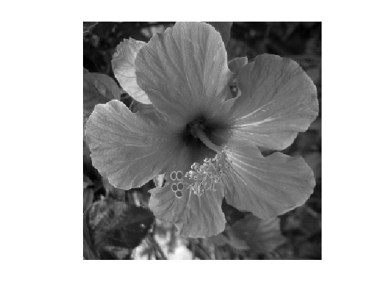
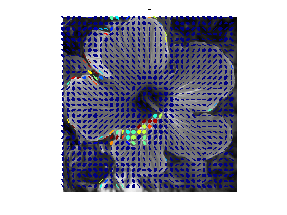
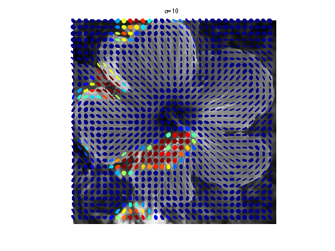
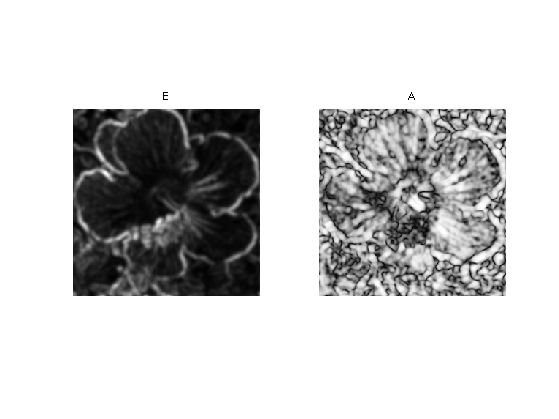
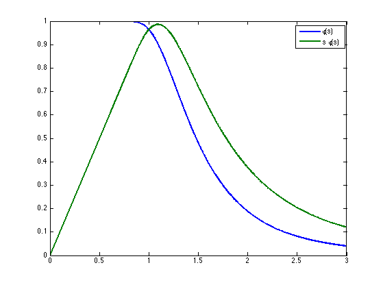
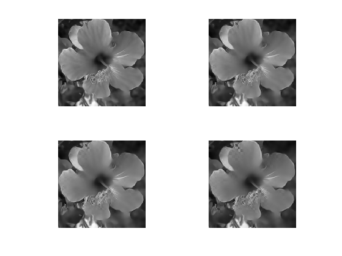

Tensor-driven Diffusion Flows
This numerical tour explores the structure tensor to represent the geometry of images and textures. It applies it to perform anisotropic image diffusion. A good reference for diffusion flows in image processing is [Weickert98].
Contents
Installing toolboxes and setting up the path.
You need to download the following files: signal toolbox and general toolbox.
You need to unzip these toolboxes in your working directory, so that you have toolbox_signal and toolbox_general in your directory.
For Scilab user: you must replace the Matlab comment '%' by its Scilab counterpart '//'.
Recommandation: You should create a text file named for instance numericaltour.sce (in Scilab) or numericaltour.m (in Matlab) to write all the Scilab/Matlab command you want to execute. Then, simply run exec('numericaltour.sce'); (in Scilab) or numericaltour; (in Matlab) to run the commands.
Execute this line only if you are using Matlab.
getd = @(p)path(p,path); % scilab users must *not* execute this
Then you can add the toolboxes to the path.
getd('toolbox_signal/'); getd('toolbox_general/');
Helpers Functions
We define here a few features (convolution, gradient, etc.) that will be used in the sequel.
Size of the image of \(N=n \times n\) pixels.
n = 256;
Load an image \(f\).
name = 'hibiscus';
f = load_image(name,n);
f = rescale( sum(f,3) );
Display it.
clf; imageplot(f);
We define circular convolution \[ (f \star h)_i = \sum_j f_j h_{i-j}. \] Note that here, \(f\) can be multi-channel, in which case each channel is convolved with \(h\). This will be useful to blur tensor fields.
cconv = @(f,h)real(ifft2(fft2(f).*repmat(fft2(h),[1 1 size(f,3)])));
Define a Gaussian blurring kernel of width \(\si\): \[ h_\si(x) = \frac{1}{Z} e^{ -\frac{x_1^2+x_2^2}{2\si^2} }\] where \(Z\) ensures that \(\hat h_\si(0)=1\).
t = [0:n/2 -n/2+1:-1]; [X2,X1] = meshgrid(t,t); normalize = @(h)h/sum(h(:)); h = @(sigma)normalize( exp( -(X1.^2+X2.^2)/(2*sigma^2) ) );
Define the convolution with \(h_\si\).
blur = @(f,sigma)cconv(f,h(sigma));
We use in the following a centered finite difference approximation of \(\nabla f\), which is a vector field in \(\RR^{n \times n \times 2}\).
options.order = 2; nabla = @(f)grad(f,options);
We define the tensor product associated to a vector \(u = (u_1,u_2), v=(u_1,u_2) \in \RR^{2}\) as the symetric matrix \[ u \otimes v = u v^* = \begin{pmatrix} u_1 v_1 & v_1 u_2 \\ u_1 v_2 & u_2 v_2 \end{pmatrix} \in \RR^{2 \times 2}. \] It is extended to vector fields \( (u(x))_x \in \RR^{N \times 2} \) as \[ (u \otimes v)(x) = u(x) \otimes v(x) \]
A tensor field \(T\) is a collection of symmetric positive definite matrices \(T(x) \in \RR^{2 \times 2}\).
A simple way to build a tensor field is by auto-tensorization of a vector field \(u(x)\), i.e. \(T = u \otimes u\).
Define a shortcut for \(u \otimes u\) (we make use of symmetry to only store 3 components).
tensorize = @(u)cat(3, u(:,:,1).^2, u(:,:,2).^2, u(:,:,1).*u(:,:,2));
Rotate a tensor field by \(\pi/2\) (for display only).
rotate = @(T)cat(3, T(:,:,2), T(:,:,1), -T(:,:,3));
Structure Tensor
The structure tensor is a field of symetric positive matrices that encodes the local orientation and anisotropy of an image.
It was initially introduced for corner detection [HarSteph88] [Forstner86] and oriented texture analysis [KassWit85].
Given an image \(f\), its structure tensor with scale \( \sigma>0 \) is defined as \[ T_\si = h_\si \star T_0 \qwhereq T_0 = \nabla f \otimes \nabla f. \] For each location \(x\), \(T_\si(x)\) is thus a positive definite matrix.
T = @(f,sigma)blur( tensorize( nabla(f) ), sigma);
The matrix \(T_\si(x)\) can be understood as the local covariance matrix of the set of gradient vector around \(x\).
Another way to get some insight about this tensor field is to consider a localized version \(f_x\) of the image around point \(x\), defined by \(f_x(y) = h_\si(x-y)^{1/2} f(y)\), which is close to zero when \(y\) is far away from \(x\). One has the following Taylor expansion of the \(L^2\) norm between two close enough localizations: \[ \norm{f_x - f_{x+\de}}^2 = \de^* T_\si(x) \de + O(\norm{\de}^3). \]
To better understand the behavior of \(T_\si\) as a function of \(\si\), one can computes its Taylor expansion for small \(\si\) \[ T_\si(x) = T_0(x) + \si^2 Hf(x)^2 + O(\si^3), \] where \(Hf(x) \in \RR^{2 \times 2}\) is the Hessian matrix of \(f\) at point \(x\). This shows that when \(\si\) increases, the intial rank-1 tensor \(T_0(x)\) becomes full rank because it integrates energy from \(Hf(x)^2\).
A convenient way to display a tensor field such as \(T_\si\) is to draw an ellispe \(\Ee_x\) at each pixel \(x\) as the (scaled and translated) unit ball of the tensor \[ \Ee_x = \enscond{\de \in \RR^2}{ \de^* T_\si(x) \de \leq 1 }. \] This allows one to visualize the anisotropy and orientation encoded in the tensor field.
Display \(T_\si\) for \(\si=0.1\) (the tensors are almost rank-1):
options.sub = 8;
clf; sigma = .1;
plot_tensor_field(rotate(T(f,sigma)), f, options);
title(['\sigma=' num2str(sigma)]);

For \(\si=4\):
clf; sigma = 4;
plot_tensor_field(rotate(T(f,sigma)), f, options);
title(['\sigma=' num2str(sigma)]);
 For \(\si=10\):
clf; sigma = 10;
plot_tensor_field(rotate(T(f,sigma)), f, options);
title(['\sigma=' num2str(sigma)]);
 Eigen-decomposition and Anisotropy
A symmetric tensor field \(S(x)\) can be decomposed as \[ S(x) = \lambda_1(x) e_1(x) \otimes e_1(x) + \lambda_2(x) e_2(x) \otimes e_2(x), \] where \((e_1(x),e_2(x))\) are the orthogonal eigenvector fields, \(0 \leq \lambda_2(x) \leq \lambda_1(x)\) are the eigenvalues.
Compute the eigenvalues of \(S \in \RR^{2 \times 2}\) as \[ \la_i = \frac{1}{2} \pa{ S_{1,1}+S_{2,2} \pm \sqrt{\Delta(S)} } \qwhereq \Delta(S) = (S_{1,1}-S_{2,2})^2 + 4 S_{1,2}^2, \] where one should use the \(+\) sign for \(i=1\).
delta = @(S)(S(:,:,1)-S(:,:,2)).^2 + 4*S(:,:,3).^2; eigenval = @(S)deal( ... (S(:,:,1)+S(:,:,2)+sqrt(delta(S)))/2, ... (S(:,:,1)+S(:,:,2)-sqrt(delta(S)))/2 );
Compute (at each location \(x\)) the leading eigenvector as \[ e_1 = \frac{1}{Z} \begin{pmatrix} 2 S_{1,2} \\ S_{2,2}-S_{1,1} + \sqrt{\Delta(S)} \end{pmatrix} \] where \(Z\) is a normalization factor ensuring \(\norm{e_1}=1\).
normalize = @(u)u./repmat(sqrt(sum(u.^2,3)), [1 1 2]); eig1 = @(S)normalize( cat(3,2*S(:,:,3), S(:,:,2)-S(:,:,1)+sqrt(delta(S)) ) );
Vector \(e_2\) is obtained by applying a \(\pi/2\) rotation to \(e_1\), which defines the eigenbasis.
ortho = @(u)deal(u, cat(3,-u(:,:,2), u(:,:,1))); eigbasis = @(S)ortho(eig1(S));
Compute the eigendecomposition of \(T_\si\).
sigma = 2; S = T(f,sigma); [lambda1,lambda2] = eigenval(S); [e1,e2] = eigbasis(S);
Implement the reconstruction formula \[ S = \la_1 (e_1 \otimes e_1) + \la_2 (e_2 \otimes e_2). \]
recompose = @(lambda1,lambda2,e1,e2)repmat(lambda1,[1 1 3]).*tensorize(e1) + repmat(lambda2,[1 1 3]).*tensorize(e2);
Check that the recomposition is exact.
mynorm = @(x)norm(x(:));
S1 = recompose(lambda1,lambda2,e1,e2);
fprintf('Should be 0: %.3f\n', mynorm(S-S1));
Should be 0: 0.000
The eigenvalues of \(T_\si\) can be used to detect interest point in the image:
- A flat region is composed of pixels \(x\) with \(\la_1(x) \approx \la_2(x) \approx 0\).
- A straight edge is composed of pixels \(x\) with \(0 \approx \la_2(x) \ll \la_1(x)\).
- A corner is composed of pixels \(x\) with \(0 \ll \la_2(x) \approx \la_1(x)\).
This idea is at the heart of the Forstner/Harris corner detector [HarSteph88] [Forstner86].
Compute the energy and anisotropy \[ E(x) = \sqrt{\lambda_1(x)+\lambda_2(x)} \qandq A(x) = \frac{\lambda_1(x)-\la_2(x)}{\la_1(x) + \lambda_2(x)} \in [0,1]. \]
E = sqrt(lambda1+lambda2); A = (lambda1-lambda2)./(lambda1+lambda2);
Display it.
clf;
imageplot({E A}, {'E', 'A'});
 Tensor Driven Anisotropic Diffusion
A tensor field \(S\) can be used as anisotropic metric to drive a diffusion PDE flow. The good reference for such a flow is [Weickert98].
This defines an anisotropic diffusion flow \(t \mapsto f_t\) \[ \pd{f_t}{t}(x) = \text{div}\pa{ S(x) \nabla f_t(x) } \] where \(f_0\) is a given data at time \(t=0\).
Note that this is actually a linear PDE, since \(S\) does not evolve in time. But in practice, \(S\) is usually computed from \(f_0\), so that the mapping \(f_0 \mapsto f_t\) is actually non-linear.
This PDE is discretized in time using a explicit time stepping \[ f^{(\ell+1)}(x) = f^{(\ell)}(x) + \tau \text{div}\pa{ S(x) \nabla f^{(\ell)}(x) } \]
The time step \(\tau\) should be small enough for the diffusion to be stable.
To produce edge-enhancing diffusion, we define \(S\) from the structure tensor field \(T_\si\) by re-normalizing the eigenvalues. \[ S(x) = \phi(\lambda_1(x)) e_1(x)e_1(x)^* + e_2(x)e_2(x)^*, \] where \(\phi : \RR^+ \rightarrow \RR^+\) is defined, following [Weickert98], as \[ \phi(s) = 1 - \text{exp}\pa{ -\frac{C_m}{(s/\la)^m} }. \] Here \(m\) is a given exponent, and the constant \(C_m\) ensures that \(s \phi(s)\) is increasing for \(s < \la\) and decreasing for \(s > \la\), which produces the edge-enhancing effect.
Set the values of \(m\) and \(C_m\).
m = 4; Cm = 3.31488;
Define \(\phi\).
phi = @(s,lambda)1-exp( -Cm./(s/lambda).^m );
Display \(\phi(s)\) and \(s\phi(s)\) for \(\la=1\).
s = linspace(0,3,1024)'; clf; plot(s, [phi(s,1) s.*phi(s,1)], 'LineWidth', 2); legend('\phi(s)', 's \phi(s)');
Select \(\lambda\).
lambda = 1e-3;
Select \(\si\).
sigma = 2;
Compute the eigen-decomposition of \(T_\si\).
S = T(f,sigma); [lambda1,lambda2] = eigenval(S); [e1,e2] = eigbasis(S);
Compute \(S\).
S = recompose(phi(lambda1,lambda),ones(n),e1,e2);
Note that this remapping of the eigenvalues of \(T\) to the eigenvalues of \(S\) exchanges the roles of the eigenaxes. This causes the diffusion to be stronger along the edges, and to be small perpenticular to it.
This flow can thus be seen as an anisotropic version of the famous Perona-Malick flow [PerMal90]. Note that the Perona-Malick flow is often refered to as an anisotropic diffusion, but it is actually incorrect, because the diffusion tensor associated to is is actually isotropic, since it corresponds to using a time-dependent tensor field \[ S(x) = \phi(\norm{\nabla f_t(x)}) \text{Id}_2 . \]
Shortcut for the multiplication \(S u\) of tensor \(S\) by vector field \(u\).
Mult = @(S,u)cat(3, S(:,:,1).*u(:,:,1) + S(:,:,3).*u(:,:,2), ...
S(:,:,3).*u(:,:,1) + S(:,:,2).*u(:,:,2) );
Step size \(\tau\).
tau = .05;
First initialize the image to diffuse at time \(t=0\).
f1 = f;
Perform one step of the diffusion.
f1 = f1 + tau * div( Mult(S, nabla(f1) ) );
Exercice 1: (check the solution) Perform the full diffusion up to a large enough time.
exo1;
Bibliography
- [Weickert98] Joachim Weickert, Anisotropic Diffusion in Image Processing, ECMI Series, Teubner-Verlag, Stuttgart, Germany, 1998.
- [KassWit85] Michael Kass, Andrew P. Witkin, Analyzing Oriented Patterns, IJCAI, 1985: 944-952.
- [HarSteph88] C. Harris and M. Stephens, A combined corner and edge detector. Proceedings of the 4th Alvey Vision Conference. pp. 147-151, 1988.
- [PerMal90] P. Perona and J. Malik, Scale-space and edge detection using anisotropic diffusion. IEEE Transactions on Pattern Analysis and Machine Intelligence, 12 (7): 629-639, 1990.
- [Forstner86] W. Forstner, A Feature Based Correspondence Algorithm for Image Matching, Intl. Arch. of Photogrammetry and Remote Sensing, vol. 26, pp. 150-166, 1986